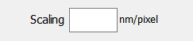

Setting or changing the image scale
The image scale (nm/pixel) (obtained from the program that saved the images/image stack) is stored
in the file {fn_}tetramer.dat which does not exist if no previous analysis has been done on the data set.
Setting the image scale for a new image set
When analysing an image data set for the first time, no {fn_}tetramer.dat exists and the pixel size has to be
entered to enable the analysis to proceed. You can either:
- Enter the image scale (02.- 3.0 nm/pixel) in the box before you press the browse button:

- If you do not, the program will ask for the image scale once the browse button is pressed
Changing the image scale
You can change the image scale for an image that has been previously analysed in two ways:
- (NOT recommended) Enter the image scale (02.- 3.0 nm/pixel) n the box before you press the browse button.
The system will ask you to confirm if the pixel size is different from that stored in {fn_}tetramer.dat.
- Preferred - after 'Load & Display' is pressed F9 allows you to change the pixel size and immediately
see the effects. Any change you make will be saved in the {fn_}tetramer.dat file.